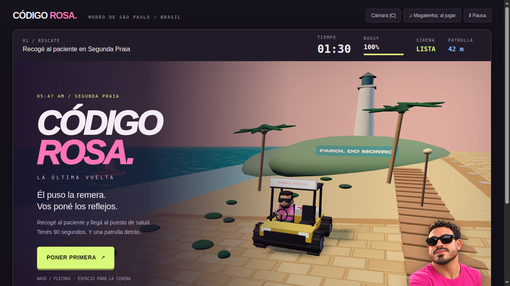
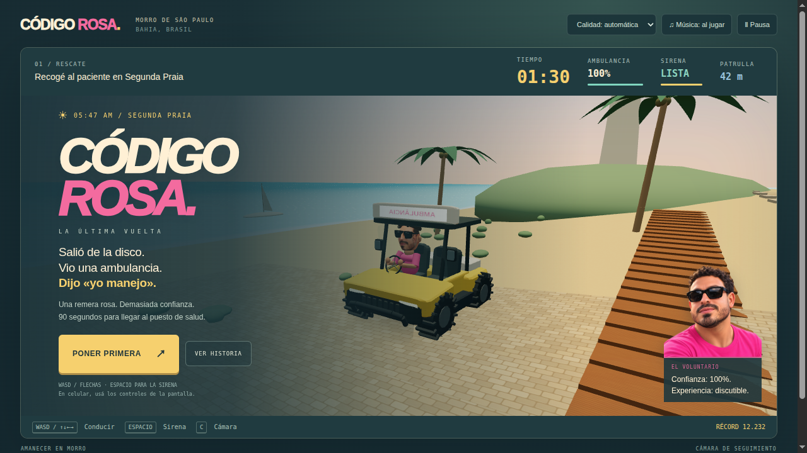

La misma anécdota. Una nueva puesta en escena.
Capturas del proyecto original y de la renovación. La misión y el trazado se conservan; cambian modelos, materiales, iluminación, cámara y presentación.


Inicio: el protagonista y la ambulancia como centro de la presentación.